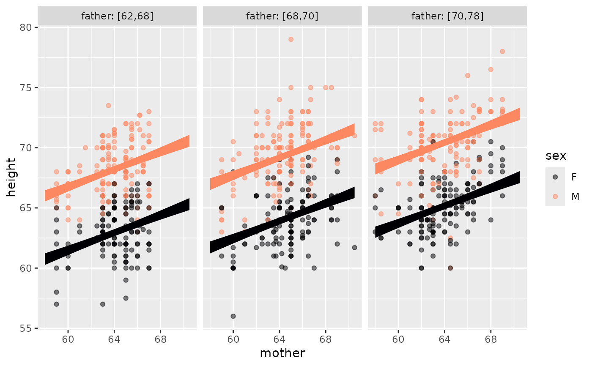

point_plot() makes it easy to construct an informative basic graph of a
data frame. "Making it easy" means that the user only needs to specify
two things: 1) the data frame to be used and 2) a tilde expression with the response variable on the left and up to
three explanatory variables on the right. The response variable is mapped to
the vertical axis while the first explanatory variable defines
the horizontal axis. The second explanatory variable (if any) maps to color,
the third (if any) defines facets. Quantitative variables used for color or faceting
are cut into categorical variables, so color and facets will always be discrete.
Arguments
- D
a data frame
- tilde
tilde expression specifying
y ~ xory ~ x + color- seed
(optional) random seed for jittering
- annot
Statistical annotation (one of "none", "violin", "model", "bw")
- jitter
Options for turning on jitter: one of
"default","both","none","x","y". By default, By default, categorical variables are jittered.- interval
the type of interval: default
"confidence". Others:"none"or"prediction"- point_ink
Opacity of ink for the data points
- model_ink
Opacity of ink for the model annotation
- palette
Depending on taste and visual capabilities, some people might prefer to alter the color scheme. There are 8 palettes available:
"A"through"H".- bw
bandwidth for violin plot
- level
confidence level to use (0.95)
- nx
Number of places to evaluate any x-axis quantitative vars. Default 50. Use higher if graph isn't smooth enough.
- model_family
Override the default model type. See
model_train()- ...
Graphical options for the data points, labels, e.g. size
Details
When an x- or y- variables is categorical, jittering is automatically applied.
Using annot = "model" will annotate the data with the graph of a
model — shown as confidence intervals/bands — corresponding to
the tilde expression. annot = "violin" will annotate with a violin plot.
If you want to use the same explanatory variable for color and faceting
(this might have pedagogical purposes) merely repeat the name of the color variable
in the faceting position, e.g. mpg ~ hp + cyl + cyl.
Examples
mosaicData::Galton |> point_plot(height ~ mother + sex + father, annot="model", model_ink=1)

mtcars |> point_plot(mpg ~ wt + cyl)
 mtcars |> point_plot(mpg ~ wt + cyl + hp, annot="model")
mtcars |> point_plot(mpg ~ wt + cyl + hp, annot="model")